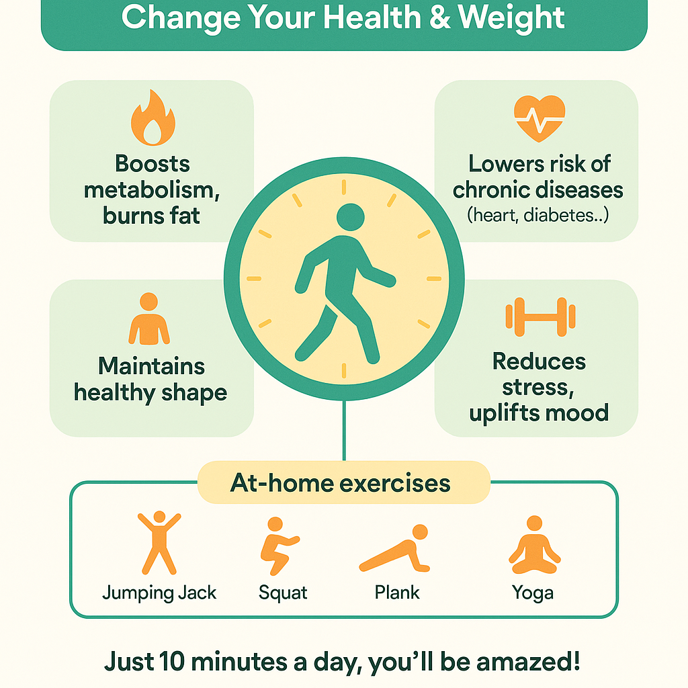

10 phút mỗi ngày – Thay đổi sức khỏe & cân nặng rõ rệt
10’
Chỉ cần 10 phút vận động mỗi ngày – bạn sẽ bất ngờ với sự thay đổi về sức khỏe, vóc dáng và tinh thần.

Lợi ích chỉ với 10 phút/ngày:
- Cải thiện trao đổi chất, hỗ trợ đốt mỡ: Tăng nhịp tim, kích hoạt đốt năng lượng suốt ngày.
- Giảm nguy cơ bệnh mãn tính: Ổn định huyết áp, giảm tiểu đường, béo phì, tim mạch.
- Tăng sức khoẻ tim mạch, xương khớp: Các hệ cơ quan được “làm mới”.
- Giảm stress, tăng tinh thần: Giải phóng endorphin, ngủ ngon, vui vẻ hơn.
- Duy trì vóc dáng: Kiểm soát cân nặng nhẹ nhàng, không áp lực.
Các bài tập đơn giản – Không cần dụng cụ
- Jumping Jack: Nhảy dang tay chân (30 giây x 3)
- Squat: Ngồi xuống đứng lên (15 lần x 2-3)
- Chống đẩy (push-up): Thảm hoặc tường (10-15 lần)
- Plank: Giữ thẳng người trên khuỷu tay (20-30 giây x 2-3)
- Gập bụng nhẹ: Nằm gập lên xuống (10-15 lần)
- Hoặc thử: Yoga (Mèo-Bò, Rắn Hổ Mang, Chó Úp Mặt), giãn cơ, xoay vai, nâng gối…
- Mẹo: Bật nhạc yêu thích, làm theo video YouTube 10 phút để “lấy đà” mỗi ngày!
Cách duy trì động lực, dù lịch bận rộn:
- Chọn thời điểm cố định: Sáng sau ngủ dậy hoặc chiều tối.
- Cam kết thật nhỏ: chỉ 10 phút/ngày, không áp lực!
- Ghi vào lịch, đặt báo thức nhắc nhẹ.
- Tập cùng người thân/bạn bè – vừa tập vừa tám, niềm vui tăng gấp đôi.
- Tự thưởng mỗi tuần đủ 10 phút/ngày.
- Theo dõi cảm giác: đo số đo, cân nặng, hoặc chỉ ghi chú mỗi ngày cảm thấy thế nào.
Chỉ 10 phút/ngày, bạn sẽ cảm nhận cơ thể và tinh thần thay đổi rõ rệt chỉ sau vài tuần!
Bạn biết không? Một “bí quyết nhỏ” đã giúp mình duy trì đều thói quen này – đó là F.FIT.
Đừng bỏ lỡ các bài tới để khám phá F.FIT, hoặc inbox nếu muốn biết ngay vì sao F.FIT lại giúp duy trì động lực cực tốt!